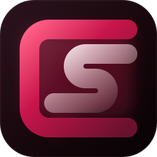

运行时随应用提供
Android 无需 Termux，Windows 无需另装 Node.js；安装与启动流程由 SillyClient 接管。

SillyClient共享的 React 控制台只负责发出指令；安装、进程、运行时和阅读窗口，由 Android 或 Windows 的平台端接手。
Android 无需 Termux，Windows 无需另装 Node.js；安装与启动流程由 SillyClient 接管。
管理界面和 SillyTavern 使用各自的窗口，退出阅读界面不等于停止实例。
React 控制台保持一致，Android 的 Kotlin 与 Windows 的 Electron 分别处理原生能力。